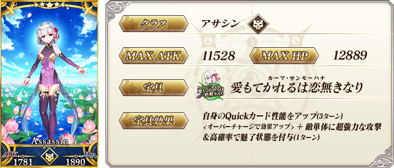
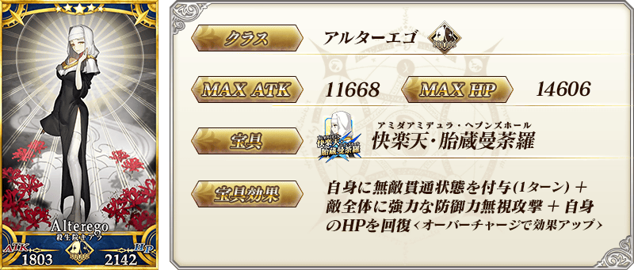
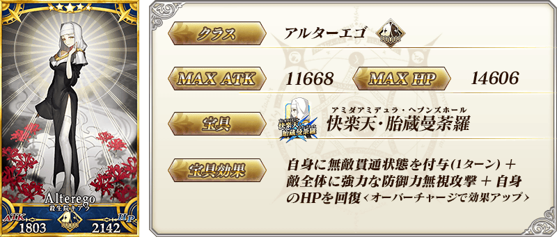
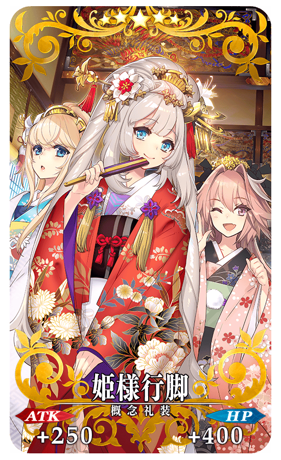
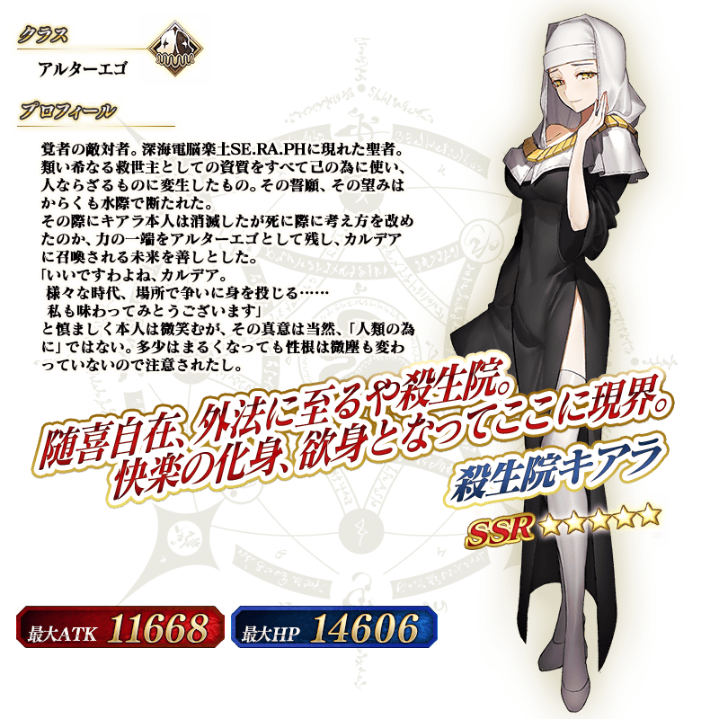

◆「復刻 徳川廻天迷宮 大奥Pick Up召喚(每日交替)」期間◆
期間:2020年7月22日(三) 17:00～8月5日(三) 11:59
期間限定「復刻 徳川廻天迷宮 大奥Pick Up召喚(每日交替)」舉辦！
變更在2019年舉辦的「徳川廻天迷宮 大奥Pick Up召喚」及「徳川廻天迷宮 大奥Pick Up2召喚(每日交替)」一部份內容進行復刻。
※就算未滿足活動參加條件的狀態也能進行本召喚。
本次是從期間限定活動「復刻:徳川廻天迷宮 大奥」關聯從者之中，下述的期間限定從者以每日交替Pick Up！
・★5(SSR)伽摩
・★5(SSR)殺生院祈荒
另外，下述的從者常駐Pick Up！ ・★4(SR)柳生但馬守宗矩
並且，2019年的「徳川廻天迷宮 大奥Pick Up召喚」及「徳川廻天迷宮 大奥Pick Up2召喚(每日交替)」中登場的下述的期間限定概念禮裝常駐Pick Up！ ・★5(SSR)姫様行脚 ・★4(SR)春うらら ・★3(R)火消魂 裝備上述3種概念禮裝的話，在期間限定活動「復刻:徳川廻天迷宮 大奥」中會提升活動道具的掉落獲得數。
Pick Up期間中，Pick Up對象從者與概念禮裝的出現機率提升！
詳情請在聖晶石召喚畫面左下的召喚詳細確認。
11次召喚中確定1張★4(SR)以上和確定1位★3(R)以上的從者！ ※確定★4(SR)以上包含從者和概念禮裝。
◆有關從者的注意◆
※請注意本召喚做為每日交替，下述的從者就算舉辦期間中也有不會被抽出來的日子。
・★5(SSR)伽摩
・★5(SSR)殺生院祈荒
※下述的從者在Pick Up期間結束後不會追加到故事召喚。
・★5(SSR)伽摩
・★5(SSR)殺生院祈荒
※本召喚的Pick Up期間中，透過故事進行所追加的下述從者就算通過各章前也能入手。
・★4(SR)柳生但馬守宗矩
※下述的從者在Pick Up期間結束後仍會在故事召喚被抽出。
・★4(SR)柳生但馬守宗矩
◆有關概念禮裝的注意◆
※下述的概念禮裝，Pick Up期間中能靠友情點數召喚獲得。
・★3(R)火消魂
※請注意在自動變還設定登錄★3(R)概念禮裝的情況，下述的概念禮裝會是自動變還的對象。
・★3(R)火消魂
◆「復刻 徳川廻天迷宮 大奥Pick Up召喚(每日交替)」Pick Up內容◆
| Pick Up期間 | Pick Up內容 | |
|---|---|---|
| 每日交替Pick Up | 全天Pick Up | |
| 7/22(三) 17:00～ 7/23(四) 22:59 |
★5 伽摩 | ★4 柳生但馬守宗矩 |
| 7/23(四) 23:00～ 7/25(六) 22:59 |
★5 殺生院祈荒 | |
| 7/25(六) 23:00～ 7/27(一) 22:59 |
★5 伽摩 ★5 殺生院祈荒 |
|
| 7/27(一) 23:00～ 7/30(四) 22:59 |
★5 伽摩 | |
| 7/30(四) 23:00～ 8/2(日) 22:59 |
★5 殺生院祈荒 | |
| 8/2(日) 23:00～ 8/5(三) 11:59 |
★5 伽摩 ★5 殺生院祈荒 |
|
※請注意會以每日交替變更Pick Up的從者。

 


 ※上述「★4(SR)柳生但馬守宗矩」的卡面為靈基再臨第2階段。
※上述「★4(SR)柳生但馬守宗矩」的卡面為靈基再臨第2階段。
|  |
★★★★★SSR
|


|
★★★★SR |
|
★★★R
|



介紹在本召喚Pick Up的3位從者寶具演出！
在「Fate/Grand Order」官方網站內的公告中，以影片公開寶具演出，敬請確認。
※「★5(SSR)伽摩」的寶具會根據再臨階段變化名稱與演出。
【★5(SSR)伽摩】
【★5(SSR)殺生院祈荒】
【★4(SR)柳生但馬守宗矩】
其他還有，期間限定活動「復刻:徳川廻天迷宮 大奥」同時舉辦！
關於詳情，請自下述橫幅確認。
■「復刻:徳川廻天迷宮 大奥」詳細情報